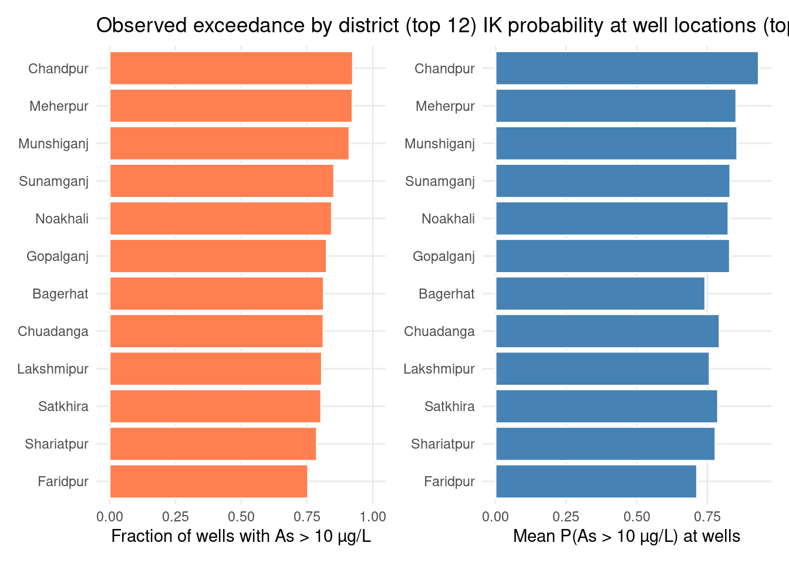

Health Analytics with R · Module 07: Geospatial & Spatial Epidemiology
Learning objectives - Understand indicator kriging (IK) for probabilistic geostatistical risk mapping - Prepare groundwater arsenic survey data with detection-limit censoring rules - Transform continuous concentrations into binary health-risk indicators (WHO & Bangladesh thresholds) - Compute, model, and visualise indicator semivariograms - Validate IK predictions with k-fold cross-validation - Map the probability of exceeding regulatory arsenic limits across Bangladesh - Interpret IK outputs for environmental health decision-making
Data:Data/bgs_geochemical.csv, Data/bd_grid.csv, Data/BD_Banladesh_BUTM.shp (+ sidecar files) Context: British Geological Survey (BGS) groundwater survey, 3,534 boreholes across 61 districts Thresholds: 10 µg/L (WHO) and 50 µg/L (Bangladesh national standard) Estimated time: 3 hours | Level: Advanced Libraries:sf, gstat, ggplot2, dplyr
2. Indicator Kriging for Environmental Health Risk
Kriging is a geostatistical interpolation technique that provides the best linear unbiased prediction (BLUP) of a spatially distributed variable, based on observed data and a model of spatial autocorrelation (the variogram). For a location \(\mathbf{s}_0\), the ordinary kriging estimate \(\hat{Z}(\mathbf{s}_0)\) is a weighted sum of \(n\) observed values:
where \(Z(\mathbf{s}_i)\) are the observed values at known locations \(\mathbf{s}_i\), and \(\lambda_i\) are weights optimized to minimize prediction variance, subject to unbiasedness (weights sum to 1).
Indicator kriging (IK) extends this approach for modeling the probability that a variable exceeds a threshold \(z_c\), rather than its absolute value. Instead of direct values, we code:
Thus, indicator kriging yields a spatial probability surface, mapping the risk of exceeding health-relevant thresholds.
This is directly useful for probabilistic decision-making in environmental epidemiology:
Application
Why IK helps
Regulatory compliance
Map P(As > 10 µg/L) for WHO guideline exceedance
National standards
Map P(As > 50 µg/L) for Bangladesh drinking-water policy
Skewed distributions
Arsenic is strongly right-skewed; log-transforms distort tail behaviour
Censored data
Detection-limit samples can be handled before indicator coding
IK can also estimate an entire cumulative distribution function (CDF); the mean of the CDF (E-type estimate) provides a concentration estimate when multiple thresholds are modelled (Goovaerts, 2009).
In this notebook we follow the classic BGS Bangladesh arsenic workflow:
Convert arsenic concentrations to indicator variables at 10 and 50 µg/L
Compute and model indicator semivariograms
Predict the probability of exceeding each threshold by indicator kriging
Visualise probability surfaces on a national prediction grid
cat(sprintf("Districts in shapefile: %d\n", nrow(bd)))
Districts in shapefile: 369
print(head(df, 3))
# A tibble: 3 × 34
SAMPLE_ID SAMPLE_FIELD_ID SAMPLE_DATE LONG_DEG LAT_DEG YEAR_CONSTRUCTION
<chr> <chr> <chr> <dbl> <dbl> <dbl>
1 S98_02701 RIP1640 9/5/1998 90.1 22.4 1993
2 S98_02715 RIP2184 16/04/1998 89.4 23.9 1977
3 S98_02979 RIP0490 2/6/1998 91.6 24.6 1995
# ℹ 28 more variables: WELL_TYPE <chr>, WELL_DEPTH <dbl>, DIVISION <chr>,
# DISTRICT <chr>, THANA <chr>, UNION <chr>, MOUZA <chr>, GEOCODE <dbl>,
# As <dbl>, Al <chr>, B_ <chr>, Ba <chr>, Ca <dbl>, Co <chr>, Cr <chr>,
# Cu <chr>, Fe <chr>, K_ <chr>, Li <chr>, Mg <dbl>, Mn <chr>, Na <dbl>,
# P_ <chr>, Si <dbl>, SO4 <chr>, Sr <dbl>, V_ <chr>, Zn <chr>
3.1 Handle detection limits
About 27.7% of wells had arsenic below the instrumental detection limit of 0.5 µg/L. Following the BGS protocol, censored values are assigned half the detection limit (0.25 µg/L) before analysis.
Samples exceeding WHO standard (10 µg/L): 42.1%
Samples exceeding Bangladesh standard (50 µg/L): 24.9%
5. Project Sample Locations to BUTM
Sample coordinates are stored as longitude/latitude (WGS 84). We reproject borehole locations to Bangladesh Universal Transverse Mercator (BUTM), the same projected CRS as the national boundary shapefile, so that Euclidean distances in metres are meaningful for the semivariogram.
What is a variogram?
In geostatistics, the (semi)variogram quantifies how spatial similarity between observations decreases as the distance between them increases. For a spatial variable \(Z(\mathbf{s})\), the semivariogram at a given lag distance \(h\) is mathematically defined as:
where \(N(h)\) is the number of sample pairs separated by approximately \(h\).
What is an indicator variogram?
An indicator variogram applies the same principle, but to a binary (0/1) transformation of the variable. For example, for a threshold \(T\), the indicator variable \(I_T(\mathbf{s})\) is given by:
Indicator variograms describe the spatial continuity of high/low risk zones (e.g., areas exceeding an arsenic threshold). In practice, we fit a model (e.g., exponential) to the experimental variogram points to estimate parameters such as nugget, sill, and range.
In this section, we compute and fit indicator variogram models for each binary risk threshold using gstat.
Following the R gstat::krige.cv(..., nfold = 5) workflow, we use 5-fold cross-validation: each fold is held out, indicator kriging is refit on the training folds, and P(indicator = 1) is predicted at held-out locations. Points are coloured green when the indicator is 0 (below threshold) and red when 1 (above); symbol size is proportional to predicted probability.
The boundary shapefile labels are sparse, so we summarise risk using the DISTRICT field from the BGS borehole survey. For each district we report the fraction of sampled wells exceeding each threshold and the mean IK probability at sample locations (by joining each borehole to its nearest grid cell).
top <- district_risk %>%slice_head(n =12) %>%mutate(DISTRICT =fct_reorder(DISTRICT, frac_gt_10))p_d1 <-ggplot(top, aes(frac_gt_10, DISTRICT)) +geom_col(fill ="coral", colour ="white") +coord_cartesian(xlim =c(0, 1)) +labs(x ="Fraction of wells with As > 10 µg/L",y =NULL, title ="Observed exceedance by district (top 12)")p_d2 <-ggplot(top, aes(mean_p_gt_10, DISTRICT)) +geom_col(fill ="steelblue", colour ="white") +labs(x ="Mean P(As > 10 µg/L) at wells",y =NULL, title ="IK probability at well locations (top 12)")print(p_d1 | p_d2)

13. Interpretation & Health Policy Context
Key findings from indicator kriging:
IK maps show where groundwater is likely unsafe, not just where samples were taken — critical because borehole density is uneven.
The 10 µg/L (WHO) surface is more extensive than the 50 µg/L (Bangladesh) surface, reflecting the stricter health guideline.
Probabilities are spatially smooth but locally adjusted to nearby sample indicators.
Cross-validation Brier scores quantify calibration; lower is better.
Limitations: - IK assumes stationarity of the indicator semivariogram. - Censored values at 0.25 µg/L affect indicators only near zero. - E-type concentration estimates require multiple thresholds and CDF reconstruction (Goovaerts AUTO-IK).
References: - Goovaerts P. (2009). AUTO-IK: a geostatistical program for indicator kriging. Environ Sci Technol. - BGS Bangladesh arsenic survey: bgs.ac.uk groundwater health data
14. Knowledge Check
Why is indicator kriging preferred over ordinary kriging on log-transformed arsenic for mapping regulatory exceedance?
What does a predicted probability of 0.7 at an unmonitored grid cell mean for a household relying on a local tube well?
How would you test whether the exponential variogram model is adequate for the 50 µg/L indicator?
If the Bangladesh government wanted to prioritise well testing, how would you use the P(As > 50 µg/L) map to rank districts?
Extend the analysis: add a third threshold (e.g., 200 µg/L) and compare spatial patterns of severe poisoning risk.
Next → NB-08: Capstone — Spatial Health Inequity Atlas (or continue to advanced spatial ML in NB-09)